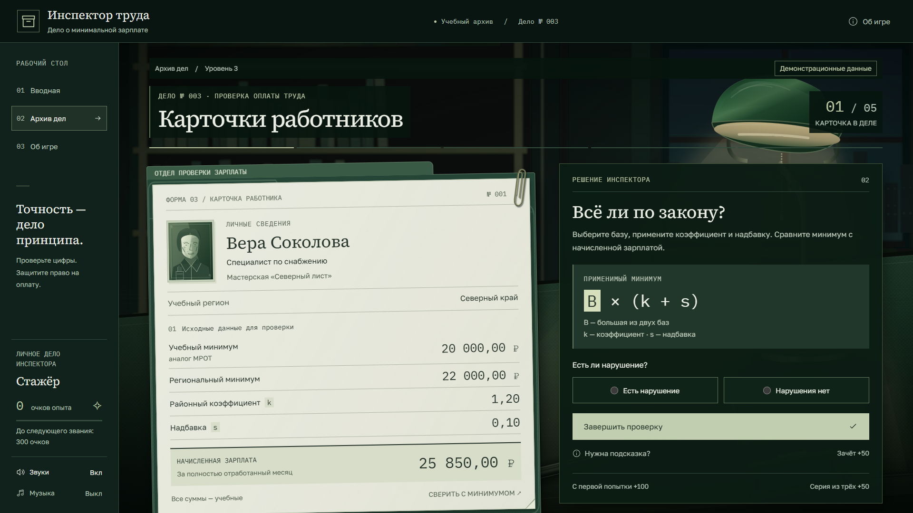

Инспектор труда · сцена до и после
Этап 0.5 · Зелёная лампа
Исходная тема B
Этап 0.6 · Кабинет инспектора
Глубина, свет, гравюра и читаемые документы

 Этап 0.6 · Кабинет инспектораГлубина, свет, гравюра и читаемые документы
Этап 0.6 · Кабинет инспектораГлубина, свет, гравюра и читаемые документы